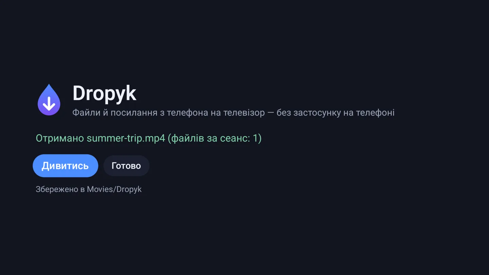

Для Android TV і Google TV
З телефона на телевізор одним скануванням.
Відкрийте Dropyk на телевізорі, наведіть камеру телефона на код і виберіть файли. Відео, фото, APK та посилання йдуть просто через домашній Wi‑Fi — без застосунку на телефоні, без хмари й акаунта.
- Android 7.0+
- ~1 МБ
- GPL-3.0
- Без акаунта
- Без хмари


Як це працює
Три кроки, один пульт.
-
1. Скануйте
Відкрийте Dropyk на телевізорі. Код веде телефон на сторінку, яку віддає сам телевізор. Додайте її в закладки — вона й далі працюватиме.
-

2. Надішліть
Виберіть один файл чи сотню. Вони йдуть по черзі, одразу на диск телевізора — фільм на 4 ГБ не проходить через його пам'ять.
-

3. Натисніть OK
Телевізор сам пропонує, що робити: відео — дивитись, APK — встановити, фото — показати, посилання — відкрити.
Куди лягають файли
Обираєте на телефоні.
У завантаження
Усе в Download/Dropyk. Знайде будь-який файловий менеджер.
За типом
Відео в Movies/Dropyk, фото в Pictures/Dropyk, музика в Music/Dropyk — там, де їх насамперед шукають плеєри й галереї.
Нічого не виходить за межі дому.
- Файли йдуть з телефона на телевізор вашою власною мережею. Жодного сервера посередині, нічого нікуди не вивантажується.
- В адресі сторінки є секретний ключ, тож надіслати може лише той, хто бачив код.
- Телевізор приймає, лише поки відкритий Dropyk. Без акаунта, реклами й стеження.
Далі
Одна точка прийому — з будь-чого.
Сьогодні надсилати можна з будь-якого телефона чи ноутбука з браузером. У планах: телевізор у меню Quick Share на Android-телефонах, надсилання з Mac через Dropyk для Mac і ярлик у меню «Поділитися» на iPhone.
Встановлення
- Завантажте dropyk.apk.
- Перенесіть на телевізор: застосунком Downloader, флешкою або командою
adb install dropyk.apk. - Коли телевізор попросить, дозвольте встановлення з цього джерела, потім відкрийте Dropyk зі списку застосунків.
Підтримати Dropyk.
Dropyk безкоштовний і таким лишиться. Якщо він зекономив вам кабель чи вивантаження в хмару — кава допоможе.